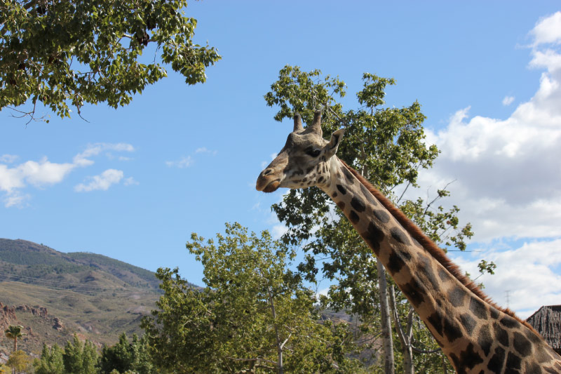

La jirafa habita exclusivamente en África, en las zonas de sabana, pastizales y bosques abiertos. Su área de distribución es bastante dispersa, desde el Chad hasta Sudáfrica, y desde Níger hasta Somalia.
Además, las jirafas son animales sociables y no suelen temer al hombre. Viven en manadas de unos diez ejemplares aproximadamente y son grupos abiertos, sin vínculos sociales fuertes, cuyos integrantes cambian constantemente.